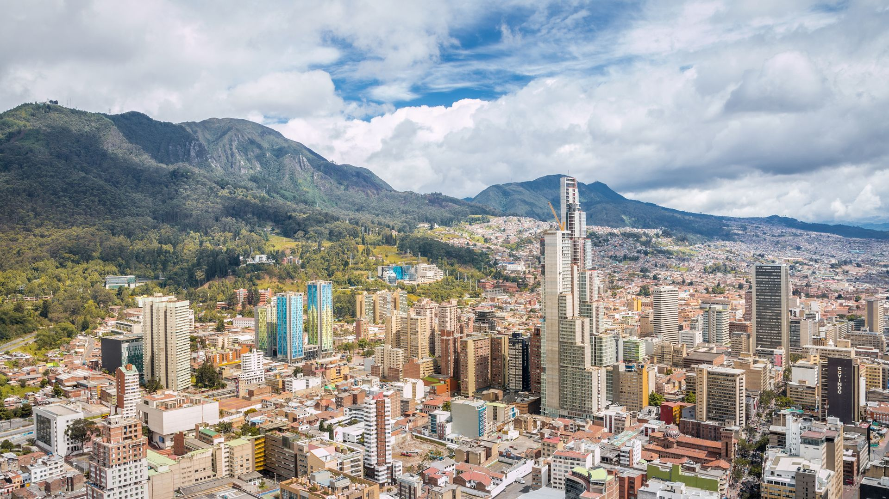
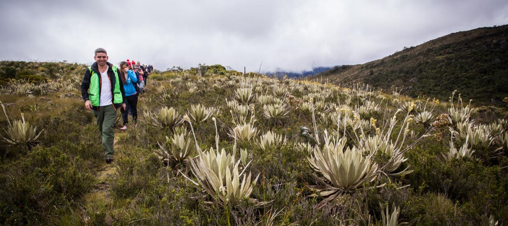

Festival cultural en el centro
Arte, música y comida local durante todo el fin de semana.
Explora rutas ocultas, historias reales y experiencias únicas en la ciudad del rebusque.
RoloTrip es tu guía para descubrir una Bogotá diferente. Aquí no encontrarás lo típico, sino experiencias reales: rutas culturales, espacios escondidos y planes diseñados por personas que viven la ciudad.



Descubre experiencias reales y planes que están marcando tendencia
Arte, música y comida local durante todo el fin de semana.

Un recorrido por los mejores cafés ocultos de la ciudad.
Descubre Bogotá desde otra perspectiva al caer la noche.
Arte, música y comida local durante todo el fin de semana.
Un recorrido por los mejores cafés ocultos de la ciudad.
Descubre Bogotá desde otra perspectiva al caer la noche.